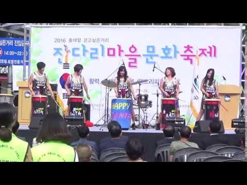
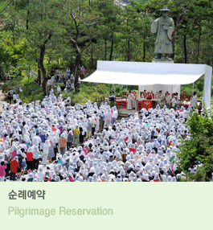
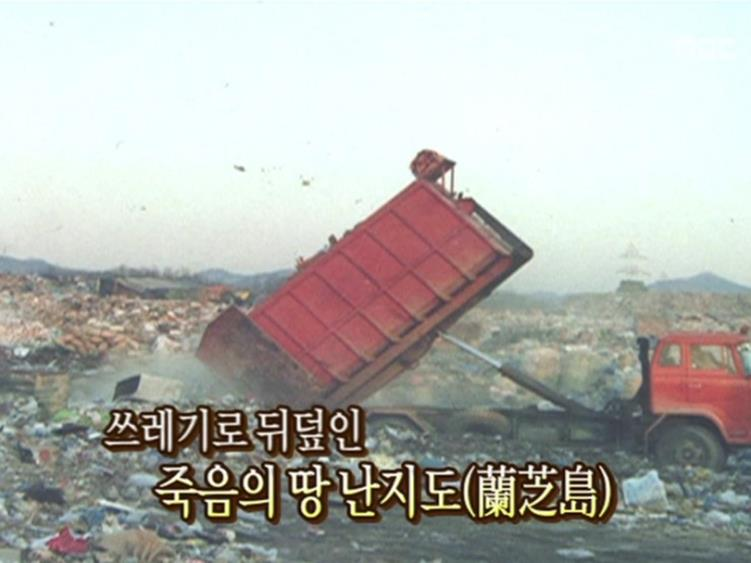
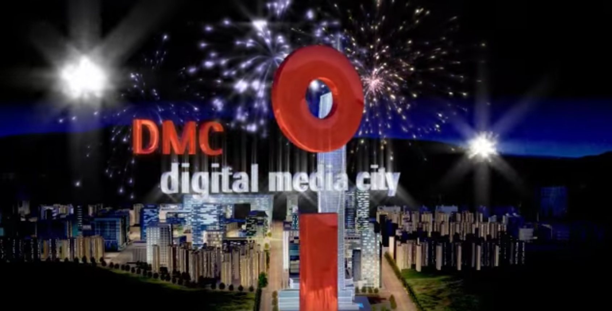
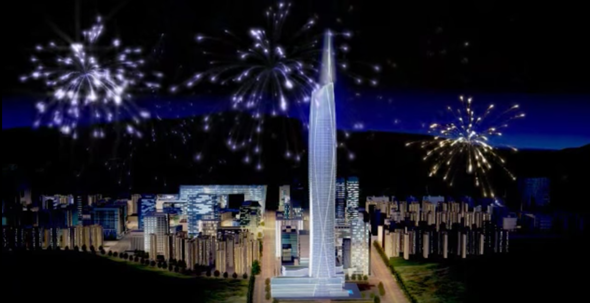
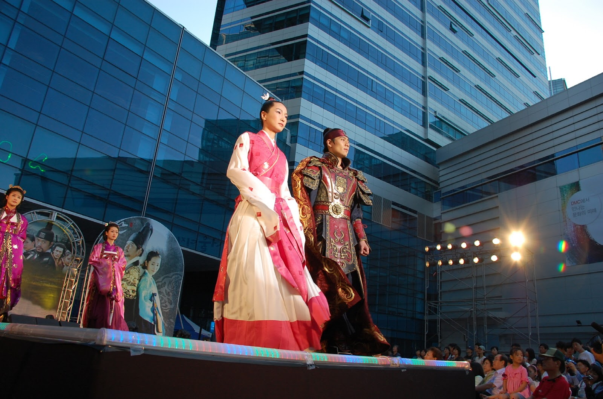

<div class="scroll" data-ui="jscroll-default">
  <div class="icon_div">
    
  </div>

  <div class = "hi" data-gu="마포구" data-dong="상암동" style="width:35%;">
    <div class="b_cap out_link">마포구의 마스코트</div>
    
  </div>
  <div class = "b_cap"><span class="word_c">마포동이's juke box: 마포구민의 노래</span> </div>
  <div class = "b_cap" style="margin-top:5px;">
    <span class="word_c">
      <audio controls>
        <source src="sound/mapo2.mp3" type="audio/mp3">
      </audio>
    </span> 
  </div>
  <div class = "thing">~마포동이~</div>

  <div class = "hi" data-gu="마포구" data-dong="서교동" style="width:40%;">
    
  </div>
  <div class = "b_cap">
    <span class="word_c">홍대는 자본으로부터 자유롭고 싶지만, 동시에 자본님이 한 번쯤은 돌아봐주길 기원하는 슬픈 젊은이들의 성지(sanctuary)입니다.</span>
  </div>
  <div class = "b_cap">
    <div class="link_div">
      <a href="http://www.sisanews.kr/news/articleView.html?idxno=20509" target="_blank"></a>
    </div>
    <span class="word_c">“상인들은 일제히 촛불을 켜고 젠트리피케이션으로 인해 더 이상 홍대앞의 독창적인 문화가 사라지지 않기를 기원할 예정이다.”</span>
  </div>

  <div class = "thing">잔다리<br>페스타</div>

  <div class = "hi" data-gu="마포구" data-dong="성산동" style="width:40%;">
    
  </div>
  <div class = "b_cap"><span class="word_c">우리 안의 홍대(Hong-dae)를 추억해주세요.</span> </div>
  <div class = "thing">우유빛깔<br>성산1동</div>

  <div class = "hi" data-gu="마포구" data-dong="합정동">
    
  </div>
  <div class = "b_cap"><span class="word_c">도심 속의 또 다른 성지(literal sanctuary), 선교사들의 목이 잘려나간 절두산 성지공원으로 순례를 떠나보세요.</span> </div>
  <div class = "thing">절두산성지순례</div>

  <div class = "hi" data-gu="마포구" data-dong="상암동">
    
  </div>
  <div class = "b_cap"><span class="word_c">과거는 묻지 마세요.</span> </div>
  <div class = "thing">난지(매립)도</div>

  <div class = "hi" data-gu="마포구" data-dong="상암동">
    
  </div>
  <div class = "b_cap"><span class="word_c">최첨단 테크놀러지와 유스 컬쳐가 결합한 디지털미디어시티(이하 DMC)는 한국 문화 산업의 팩토리입니다.</span> </div>
  <div class = "thing">K-ulture<br>factory</div>

  <div class = "hi" data-gu="마포구" data-dong="상암동">
    
  </div>
  <div class = "b_cap"><span class="word_c">DMC는 “첨단 디지털미디어 엔터테인먼트 클러스터”입니다.</span> </div>
  <div class = "thing">택꿘브이</div>

  <div class = "hi" data-gu="마포구" data-dong="상암동">
    
  </div>
  <div class = "b_cap"><span class="word_c">DMC는 “21세기형 도시 혁신의 실험장”입니다.</span> </div>
  <div class = "thing">팡팡</div>

  <div class = "hi" data-gu="마포구" data-dong="상암동">
    
  </div>
  <div class = "b_cap"><span class="word_c">DMC는 “한류 열풍의 진원지”입니다.</span> </div>
  <div class = "thing">The core of HALLYU</div>

  <div class = "hi" data-gu="마포구" data-dong="상암동">
    
  </div>
  <div class = "b_cap"><span class="word_c">DMC는 “기술의 세계화와 문화의 지역화라는 상호 보완적인 두 요구를 동시에 충족시키는
世方化(glocalization)의 촉매”가 될 것입니다.</span> </div>
  <div class = "thing">GLOCALIZATION!?</div>
  <div class="next"><a href="ydp.html">.</a></div>
</div>
